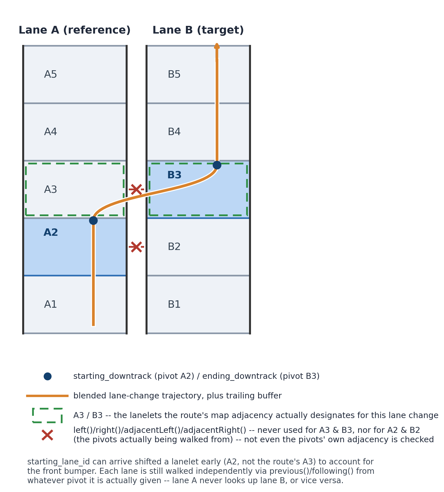
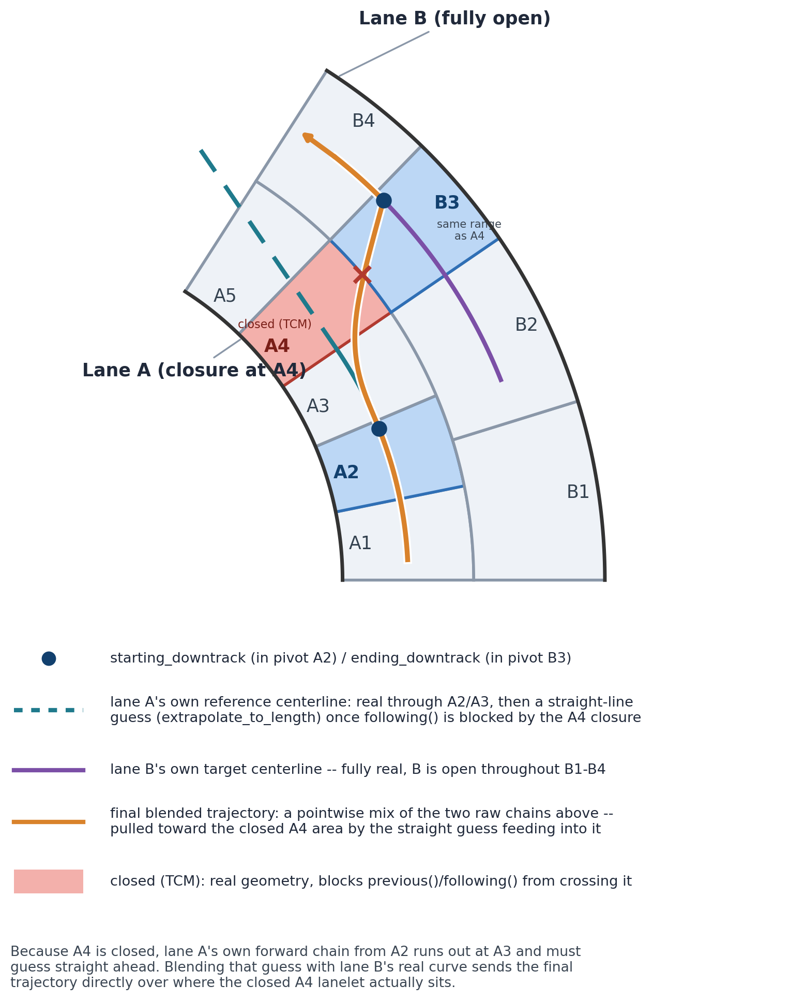

- Generated on Fri Sep 4 2026 21:01:42 for Carma-platform by
 1.9.4
1.9.4
|
Carma-platform v4.11.0
CARMA Platform is built on robot operating system (ROS) and utilizes open source software (OSS) that enables Cooperative Driving Automation (CDA) features to allow Automated Driving Systems to interact and cooperate with infrastructure and other vehicles through communication.
|
The basic_autonomy library includes functions for waypoint processing, which are used by tactical plugins in order to generate detailed trajectories for the CARMA system.
create_lanechange_geometry (src/basic_autonomy.cpp) builds the trajectory geometry for a lane change maneuver, such as the one used by the cooperative_lanechange plugin. It blends a centerline from the starting/reference lane into a centerline from the ending/target lane over the length of the lane change, plus a trailing buffer.
The two centerlines are built independently by build_chain_centerline (src/helper_functions.cpp), one call per lane, each starting from a single pivot lanelet (starting_lanelet for the reference lane, ending_lanelet for the target lane) and walking outward along that lanelet's own previous()/following() chain in the routing graph until enough length is covered.
This deliberately avoids ever asking "what lanelet is adjacent/left/right of lanelet X" for the lanelets along the way. Lateral adjacency (left()/right()/adjacentLeft()/adjacentRight()) requires the two lanes' boundaries to be explicitly linked in the map (literally the same boundary linestring), which can be missing or stripped – e.g. a TrafficControlMessage closing a lanelet, or lanelets that were simply never linked in the source map. previous()/following() only require that a lanelet be routable, a much weaker and more commonly-satisfied requirement. Because of this, starting_lanelet and ending_lanelet do not need to be adjacent to each other or the same length – they just each need to sit on an accessible (routable) chain within their own lane, walked as far forward/backward as needed to cover the lane change length plus buffer. In other words: pull in as much of the routing graph as is actually reachable, independently per lane, rather than relying on cross-lane linkage that may not exist.
If a lane's chain runs out before covering the required length (e.g. a closed or unmapped lanelet blocks further routing), extrapolate_to_length pads the centerline with a straight-line extrapolation instead of throwing, so trajectory generation always produces a usable result.

The straight segment through A1 into A2 is the vehicle simply lane-following before the maneuver begins; the arrowhead marks the overall direction of travel (downtrack increases going up the diagram). A3/B3 are the lanelets the route's map adjacency actually designates for this lane change (they genuinely share a boundary). But starting_lanelet as received by this function is frequently not the route's intended lanelet – plan_delegator shifts it back a lanelet (here, to A2) to account for the vehicle's front bumper reaching the lane-change point before the vehicle's reference point does. Each lane is still walked as its own self-contained chain, outward from whatever pivot it is actually given (A2 for the reference lane, B3 for the target lane), backward for backward_length and forward for forward_length. Neither lateral link is ever queried – not A3/B3 (the pair the route intends), and not A2/B2 (the pair actually being walked from either) – both shown crossed out above.
Because of that straight-line fallback, either lane's own chain can independently run out before covering the required length – a closure isn't only a problem for the target lane; the reference lane's own forward walk needs to reach just as far, and can just as easily be blocked. CLC still successfully generates a trajectory rather than failing, but the result can end up passing directly over the closed lanelet's own real footprint.

As before, the straight orange segment through A1/A2 is the vehicle lane-following before the maneuver starts, and the arrowhead marks the direction of travel. Here A4 is closed – B is the lane that's fully open throughout, and the trouble is on the reference side instead. starting_lanelet (A2)'s own forward chain is real through A3, but following() fails at the A4 closure, so extrapolate_to_length continues it as a straight line (teal, dashed) in the last known heading. ending_lanelet's own chain (purple) needs no such help – B is open the whole way, so it stays real from B1 through B4. The actual trajectory create_lanechange_geometry emits (orange) is a pointwise blend of those two raw chains, the same way it always is, so it always stays between them – but because one input is a straight guess sitting almost exactly where the real, closed A4 lanelet is, the blend dips directly into that closed lanelet's own footprint for a real stretch before climbing back out to meet lane B's real curve. B3 is sized to the exact same downtrack range as A4 (and ends up larger purely because it's the outer, larger-radius lane on this curve) – their adjacency genuinely exists here too, and is, once again, never queried. CLC has no idea A4 is closed or that its own blend happens to cross it.
TLDR: keep the lane change's two segments (reference lane and target lane, over the lane change length) the same accessible length in the map, on both sides. start_lanelet and end_lanelet themselves can differ in length and need not be perfectly adjacent – but walking forward/backward along their respective lanes to cover the lane change must remain accessible on both sides, and pull in as much of the routing graph as possible.